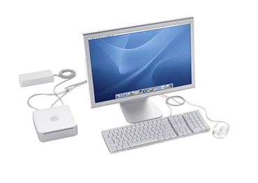

What a ride!
dinsdag 11 januari 2005 | Apple
De jaarlijkse hoogmis van Apple tijdens WWDC Macworld in California was deze avond life te volgen via een stroom korte tekstberichtjes op verschillende websites, waaronder die van Veerle. Deze keer was het echt raak! De toekomst ziet er meer dan ooit rooskleurig uit voor het Mac-universum.
Ik ben al lang geen referentie meer als het er op aankomt correct advies in te winnen voor de aanschaf van een nieuwe computer. Mijn bovenkamer werd volledig schoongespoeld: ik ben een Apple volgeling en daarmee is de kous af. Zelfs al verkocht dit bedrijf uit Cupertino enkel nog lege, witte schoendozen met hun logo op, dan nog zou ik maar moeilijk van het pad afwijken. Ik weet het, het is triestig.

Over witte schoendozen gesproken: de splinternieuwe Mac mini is volgens mij een schot in de roos! De aaibaarheidsfactor van dit kleinood is fenomenaal hoog. Ik moet me inhouden om er geen halve scheepsvloot van te bestellen voor vrienden, kennissen en familie.
Voor een slordige 600 euro haal je een computer in huis waar je voor lange tijd heel veel plezier aan kunt beleven — zonder zorgen! Het enige wat het succes van deze nieuwe Mac in de weg staat, is onwetendheid. Spread the message: Mac mini staat voor…
- superkleine, ultrastille computer
- het beste besturingssysteem ter wereld
- veiligheid (geen virussen, malware)
- ideaal voor internet, email, schoolwerk, DTP …
- digitale fotografie (niet te vergelijken met Windows)
- digitale muziek (maken én luisteren)
Persoonlijk kijk ik nog het meest uit naar iWork: een eigen Office-suite voor de Mac (of toch het begin ervan). Dit overtreft mijn stoutste dromen! Het wordt tijd dat iemand eens nieuw licht werpt op kantoorapplicaties, en wie is daarvoor beter geschikt dan Apple?
Microsoft Office, zowel op PC als Mac, moet het de laatste jaren eerder hebben van overbodige toeters en bellen dan van échte vernieuwingen. Bovendien draait geen enkele Microsoft applicatie vlotjes op Mac OS X. Je voelt dat de onderliggende code oud en/of slecht geport is: de programma’s nemen een loopje met de algemeen geldende richtlijnen van de OS X interface, ze haperen regelmatig en verbruiken veel systeemkracht. Geef Apple nog twee jaar, en ik voorspel dat mensen gaan switchen van Windows naar Mac, enkel en alleen voor iWork.
Voor meer nieuwigheden (iPhoto heerst!): hup naar Apple of hup naar Veerle voor een chronologisch overzicht van deze magische avond.
UPDATE: Check out de Tiger Tour: filmpjes om de vingers bij af te likken!
Stijn op 12 januari 2005
Objectief zijn blijkt niet echt te lukken he? :P
Ik heb zelf nog maar enkele tellen met een mac gewerkt. Niet genoeg om mij te overtuigen. Maar ik moet nog lang met een mac werken op school, dus wie weet ben ik over enkele maanden wel overtuigd.
Hoe dan ook, de mac mini klinkt zeer aanlokkelijk en draagbaar.